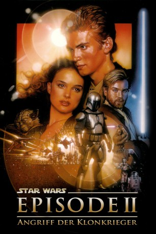

Auszeichnungen: für 1 Oscars nominiert
 gesehen am 15.11.2015
gesehen am 15.11.2015Alternativ: Star Wars: Episode II - Attack of the Clones
Auszeichnungen: für 1 Oscars nominiert gesehen am 15.11.2015
 
 IMDB-Wertung: 6.6 / 10
IMDB-Wertung: 6.6 / 10  Metascore:
Metascore: 
Der junge Jedi-Schüler Anakin Skywalker beginnt sich allmählich zu einem grossen und ernstzunehmenden Jediritter zu entwickeln, der unter der Führung von Obi Wan-Kenobi steht. Jedoch hat er auch seine Problemzonen - diese bestehen aus der eigenen Arroganz, seiner nicht wissentlich vorhandenen grenzenlosen Macht, und der ihm verbotenen Liebe zu Königin Amidala. Auf diese werden kurz vor wichtigen Entscheidungen im Senat der Republik mehrere Attentate verübt, die jedoch vereitelt werden können. Daraufhin teilen sich Anakin und Obi-Wan auf: während Anakin auf Amidala aufpaßt, verfolgt Kenobi den Attentäter Jango Fett. Er kommt einer erschaffenen Klon-Armee auf die Spur, die mittels mysteriösem Auftrag geschaffen wurde und findet in dem ehemaligen Jedi Count Dooku einen neuen Gegner für die Hüter der Macht...
Jahr: 2002
Dauer: 142 Minuten
FSK: 12
Land: USA Studio: 20th Century FoxTonspuren:
Untertitel: Deutsch, Englisch,
Auflösung: 1080p (1920x1080) Größe: 34099 MB
Genre: Action, Abenteuer, Fantasy, Sci-Fi
Regisseur:  George Lucas
George Lucas
Drehbuch: George Lucas, Jonathan Hales, George Lucas
Soundtrack: John Williams
Darsteller:
 Ewan McGregor als Obi-Wan Kenobi
Ewan McGregor als Obi-Wan Kenobi Natalie Portman als Padmé
Natalie Portman als Padmé Hayden Christensen als Anakin Skywalker
Hayden Christensen als Anakin Skywalker Christopher Lee als Count Dooku / Darth Tyranus
Christopher Lee als Count Dooku / Darth Tyranus Samuel L. Jackson als Mace Windu
Samuel L. Jackson als Mace Windu Frank Oz als Yoda
Frank Oz als Yoda Ian McDiarmid als Supreme Chancellor Palpatine
Ian McDiarmid als Supreme Chancellor Palpatine Pernilla August als Shmi Skywalker
Pernilla August als Shmi Skywalker Temuera Morrison als Jango Fett
Temuera Morrison als Jango Fett Jimmy Smits als Senator Bail Organa
Jimmy Smits als Senator Bail Organa Jack Thompson als Cliegg Lars
Jack Thompson als Cliegg Lars Ahmed Best als Jar Jar Binks / Achk Med-Beq
Ahmed Best als Jar Jar Binks / Achk Med-Beq Rose Byrne als Dormé
Rose Byrne als Dormé Oliver Ford Davies als Sio Bibble
Oliver Ford Davies als Sio Bibble Jay Laga'aia als Capt. Typho
Jay Laga'aia als Capt. Typho Anthony Daniels als C-3PO / Dannl Faytonni
Anthony Daniels als C-3PO / Dannl Faytonni Silas Carson als Ki-Adi-Mundi / Viceroy Nute Gunray
Silas Carson als Ki-Adi-Mundi / Viceroy Nute Gunray Joel Edgerton als Owen Lars
Joel Edgerton als Owen Lars Rena Owen als Taun We
Rena Owen als Taun We Kenny Baker als R2-D2
Kenny Baker als R2-D2 Hassani Shapi als Eeth Koth , archive footage
Hassani Shapi als Eeth Koth , archive footage Marton Csokas als Poggle the Lesser , uncredited
Marton Csokas als Poggle the Lesser , uncredited Liam Neeson als Qui-Gon Jinn , archive sound, uncredited
Liam Neeson als Qui-Gon Jinn , archive sound, uncredited Matthew Wood als Magaloof / Seboca , uncredited
Matthew Wood als Magaloof / Seboca , uncredited Anthony Phelan als Lama Su
Anthony Phelan als Lama Su Steve John Shepherd als Naboo lieutenant
Steve John Shepherd als Naboo lieutenantDatei: X:\7+mehr(A-Z)\Star Wars\Star Wars Episode 2 - Angriff der Klonkrieger (2002, FSK12, 1920x1080).mkv seit 21.02.2015
Festplatte: HD Collection-7+mehr(A-Z)+Person
 Es gibt insgesamt 18 Filme in der Gruppe '7+mehr(A-Z)\Star Wars'
Es gibt insgesamt 18 Filme in der Gruppe '7+mehr(A-Z)\Star Wars'